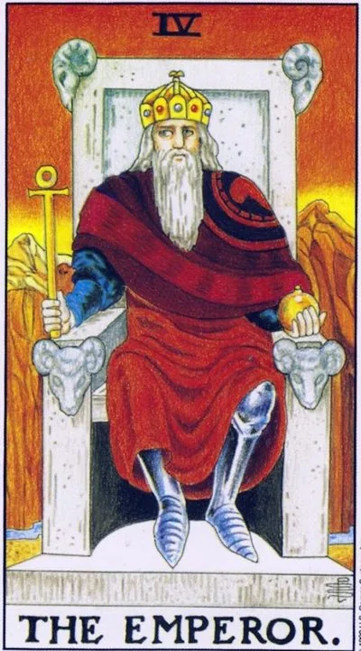

Major Arcana · IV
IVThe Emperor
Structure conquers chaos: the power, order, and responsibility of the one who holds the frame; the result comes through discipline, clear rules, and the word that is kept no matter what.
Archetype and core meaning
The emperor sits on a stone throne with the heads of rams, a sign of the connection with Aries and Mars, and holds the ankh and the power: power over life and the world is given to the one who can withstand the weight. Behind him are bare rocks: order begins where convenience ends. It is the lap of law - not external coercion, but an inner axis around which you can build.
In the context, it means a period when discipline brings results: rules, boundaries, direct conversations, signed commitments. The emperor is the father of the deck: protects, provides and demands to grow up. His strength is not in screaming, but in immutability - he is today what he was yesterday, and therefore he can be trusted with the future.
Daily life
Order day: take out the papers, put the system in the closet and budget, negotiate with the household about the rules. It's good to schedule, pay bills, deal with legal matters — the routine under this arcana is easy and productive. Meeting with older people — parents, mentors — requires respectful tone, even if you argue.
Work and career
Direct Emperor is a time of management decisions: process building, regulations writing, responsibility taking. The bosses are in this period of fact and numbers, not emotion — come with a plan, not a complaint. The card is favorable for working with government agencies, documents, real estate, building a business on solid foundation. Ask for a raise with reason: your stable value is visible and ready to pay.
Relationships
In relationships, the arcana gives you trustworthiness: the partner who holds the house, clear agreements, protecting the family as a matter of honor. The male energy here expresses love in deeds — security, presence, problems solved; the female card gives you the right to demand consistency instead of promises; The shadow is turning the union into a charter: if romance is reduced to schedule and control, add to the design of a window of freedom. Parents are reminded to guide, not suppress, and educate, not follow.
Health
Aries fire is associated with head and muscle strength: neck strains, migraines from responsibility pressures, pressure surges from chronic "I have to do it myself." The card recommends regular exercise - the regime trains blood vessels and nervous system better than one-off feats. A good period for routine treatment, operations with a clear protocol, disciplined rehabilitation: the organization of the patient directly affects the outcome. And do not carry the whole world on your shoulders alone - ask for help in time.
Spiritual meaning
The Way of Hay, the window, connects Hokma and Tiferet: light enters the world through an ordered frame. The Martial Fire of Aries makes the Emperor the patron of all forms that hold power, from the circle of ritual to the law of the state. In practice, the arcana corresponds to the altar and the boundaries of the circle: before calling for a force, make sure that there is someone to say stop.
Power that has lost its footing: tyranny and control for control’s sake – or the crown without will, where no one makes decisions and everything hangs on the moods, habits and clues of others.
Archetype and core meaning
The inverted Emperor is a throne that has lost its foundation. The first option is tyranny: control for control, orders instead of arguments, "because I said so," power that requires submission instead of trust. The second is the reverse extreme: a man in a crown but without will -- no decisions are made, duties sag, a house or department lives by mood and other people's clues.
The card often points to conflict with the power figure -- the boss, the father, the state -- or to one's own rigidity, where the rules that saved yesterday stifle today. Arkan asks a direct question: does the structure serve you or do you serve the structure? The healthy answer is to review the laws, remaining the author of your system, not its hostage.
Daily life
In everyday life, the day when order turns into despotism: picking on trifles, scandal over the wrong hanging of a towel, the household walks on the strings. Or vice versa, the economy is on its own: bills are overdue, repairs are suspended, no one is responsible for anything. Find the middle: three really important rules that are respected by everyone, including you. Strength training today is better replaced by stretching, too, the body asks not for pressure, but flexibility.
Work and career
At work, the card warns of toxic leadership, whether it's yours or yours: humiliation of subordinates, decisions by force, a cult of "toughness" under which incompetence hides. There may be a crisis of structure: regulations are outdated, the system is stalled, and it's scary to change. The good move is to document what's happening and build a legal footing: the inverted Emperor retreats to facts and paper. Owners are audited by control: where you push, people stop thinking.
Relationships
In a relationship, the arcana paints two ills: a domestic tyranny where love is measured by obedience, and a power vacuum where no one wants to take responsibility even for a vacation. Partnership turns into either a barracks or a communal room for two guests. Jealousy and surveillance are common markers of this card.
Health
The body is the first to report tyranny or chaos: hypertension, neck and jaw cramps, stomach problems from constant fist-gathering. The suppressed anger settles into the muscles and blood vessels -- there are safe ways to release it: sports, pear fighting, frank conversation. At the reverse pole, lethargy, excess weight, "hampered" health plans: basic discipline returns, and form returns. Pressure, pulse and sleep are three numbers that should be followed especially during this period.
Spiritual meaning
Hay's spiritually inverted window is a frame that has become a cage: a form that was designed to protect the light has shut it down. The card indicates the abuse of power in practice -- hard methods, self-inflicted violence, authority built on the fear of students -- and the opposite: promiscuity without any framework. The test is healthy: after your discipline, people have more life or less?
🌿 In brief
The main idea
The Emperor is law and order. He is not a conqueror or a warrior, a warrior fighting for power, and the Emperor already owns it and is responsible for keeping the system that has been created working.
How it manifests
The emperor sets the rules, protects those under his authority, and ensures that everyone fulfills his role.
In a relationship
A mature man who is able to take responsibility for his decisions and give a sense of security.
Work and money
The chief, the head, the state structures, documents, accounting, property, assets and everything that belongs to the person by right.
The shadow side
Order becomes dogma. A person begins to follow rules simply because they exist, even if a particular situation requires a different solution.
Feature of the school
In School of Modern Tarot, the Emperor is connected to Taurus and the second house, and the central mythological image is Hephaestus: the power that takes natural material and turns chaos into a useful form.
📜 In detail — lecture extracts
Essence of the card
The emperor is law and order, ruler, not conqueror: he does not wag his sword like Mars, he already owns, and legally ("crowned by right," inherits and transmits). In his system, the Emperor is not Aries, but Taurus, II House (Venus + Chiron); the key image is Hephaestus / Vulcan, the god of earthly fire, taking the gifts of nature (chaos, ore) and reforging them into useful and human by rule. This is the archetype of the father, the head of the family: "Mother loves, Dad educates." - If the Emperor is the emperor, "nature is the emperor, he is the ruler, he is not the ruler?" - "nary, nature is the emperor, he is the emperor, he is the emperor, the emperor is the ruler."
Upright position
- He does not have division into “positive / negative” – the card spreads out on the spheres: society and desires, finance and property, actions and self-development, emotions and personal life.
- - Society: management, patronage ("any boss should patronize, help, protect"), rules and laws, morality as the basic law of mankind (social laws + unwritten norms of decency), state, corporateness (community of people under a general rule - form, charter: "Mars - warrior, emperor - charter"), careerism as the desire to write rules, hierarchy.
- Finance: practicality, prudence, ownership of what is yours by right (assets, “what you can take, touch with your hands”), the ability to “give money the right growth”, accounting; tax and exchange as “the law is harsh, but it is the law”.
- - Actions, self-development: ordering of life - the daily routine, rules for oneself and relationships; practicality ("without meaning there is no use, without use there is no sense"); habits as a procedure of action; physical development of the body (II house - body): physical culture as actions in a certain order for the benefit of the body.
- - Emotions, personal life: “such a man”: experienced, graybearded, confidently does, is responsible for his actions, gives a guarantee of feelings; patronage and “stone wall” (the Empress hides behind the stone throne); traditional family (I am the main one), respect for parents and experience; form as a symbol of order – men like men in uniform, and they like women in uniform: “the combination of femininity and order gives the relationship a sharpness.”
Negative meaning
- The disadvantages give the same qualities "with too much":
- - Society: blinkeredness, too rigid adherence to corporate rules to the detriment of emotionality, kindness and useful qualities; dogma; state above personal (“it is more the East famous – China, Japan”).
- Actions: template of thinking (the framework of law and morality interfere with development); moralizing ("should - eat, not should - do not climb"), loss of vitality: "nature will a little fuck if there are solid fences around"; dryness and soullessness - "too many laws, too little naturalness."
- Habits: sometimes the order does not fit the situation - habits must be removed; an example is a cigarette: smoking as a procedure of action calms, returns "to a safe past"; "clips" - that which holds together, but freezes.
- Personal life: excessive dryness and adherence to traditions (“it is very difficult to cut a grey beard”, “we were eating and we will also be like this”), outdated experience of fathers (“how to set up a black and white TV – you do not need”).
School emphases and distinctive points
- - The main thesis: Emperor = Taurus / II house, not Aries. Lamb heads are an "inconvenient" detail: everyone sees them, but tries not to notice that "the card by nature does not coincide with Aries absolutely", which makes it difficult to guess - the feeling of the card is not energetic. Waite either did not dare to break with tradition, or showed that "the power of the law rests on desires" (he jokes about "owl on the globe").
- Hephaestus/Vulcano: a lame blacksmith, thrown by the Hero from Olympus and forged his own iron legs - that is why the Emperor's feet are iron; sits on the anvil, builder of Olympus, maker of lightning and armor of the gods - "the hands of the gods in the material world", ruler of matter, the implementation of ideas into matter.
- Hephaestus's golden net: he caught Aphrodite with Ares - the image of the right right rightful husband against Ares ("I want and take"). "May be loved, may not be loved, but he is the law."
- Volcano = Taurus: long patience - then explosion; red card, hot earth.
- Grain breeding: seed selection is the rule, crop varieties are the image of domesticating wildlife. Ore → armor; line = "dots in a certain order."
- The Law Ladder (favorite demonstration of the card principle): father in the family → director of the firm → tax → government / president → moral and religious norms → physical laws → God (“everyone has his own system, his own order – and all this is one card”).
- Chiron (the second planet of the second house): the duality of the centaur is a loving father at home, a wild warrior outside, a "Viking who loves his children but can kill anyone for gold"; a planet of materialization of subtle plans.
- King Arthur: power by birthright (sword), a round table of 12 knights - as 12 equal signs of the zodiac, the Emperor - "first among equals"; Aries - leader (Achilles), Emperor - king, sending heroes to war.
- Modern imagery: Judge Dredd (Stallon) - the radical "I am the law" that a psychic girl softens; Robocop; a men's bath every Friday as "law"; ironed jacket with a tie.
- - Russian series: fair, but stupid king of fairy tales; Vladimir Red Sun - the king-hero; "he who is strong, he and the king" - hence the confusion of Aries with the Emperor; "the severity of Russian laws is mitigated by the non-compulsoryness of their implementation."
- According to Waite: “monarch crowned by right”, scepter – ankh, stone cube, “male strength and power” (without a word about will), “government, implementation and earthly power”; prophetic meanings: stability, power, protection, implementation, reason, conviction (at the “stability of Mars” laughs).
- - Card-pair with the Empress (archetypal family couple); teaching function goes to Hierophant; "tarot cards are an infinite spiral cut into symbols" Astrolay connects with the author Yuri Khan (o)m, who "takes a lot"; advice Banzhaf does not quote; works with the decks of Waite and Monara.
Keywords
- law and order; ruler, not warrior; possession by right; crowned by right; father, head of the family; patronage; morality and statute; prudence; Hephaestus/Vulcan; tradition and "clips"; hierarchy; stone wall.
- ---